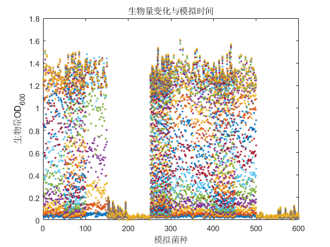
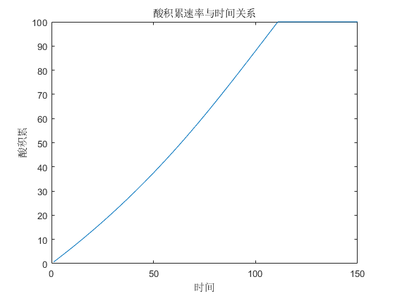
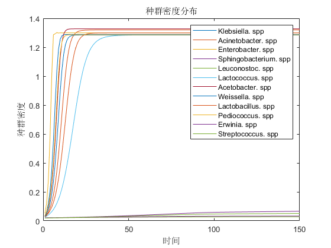
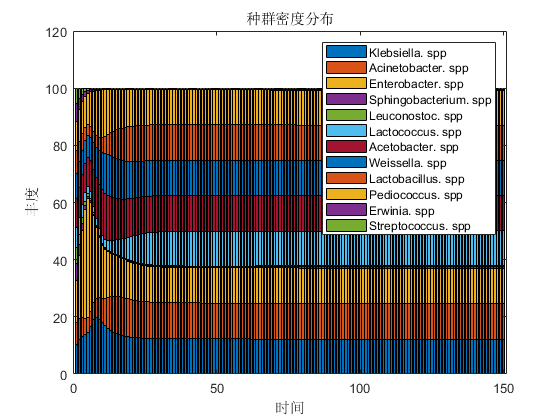
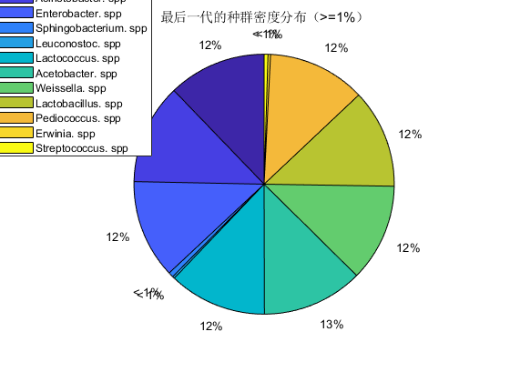

Contents
随机生成物质信息矩阵
%说明 %属性,1）耐盐能力-SaltResistant 基于菌种属性进行正态分布 %2）基础生长速率 BaseGrow 实验拟合莫特方程 根据生长抑制 %3) 产酸能力 AcidProdce 基于实验拟合分析 %4) 酸耐受能力 AcidTolerance 基于菌种属性进行正态分布 %5) 生物种类标签 species 菌种固有属性 %初始化 clc clear close all %读取模拟菌种属性 workbookFile='C:\Users\Administrator\Desktop\盐酸模型\a1.xlsx'; a_vc=xlsread(workbookFile,'A11:P22'); %读取模拟信息矩阵 stast_set=xlsread(workbookFile,'B1:B6'); Salt_set=xlsread(workbookFile,'B1:B1'); %读取菌种名称属性 sheetName='sheet2'; dataLines=[1,stast_set(4)]; sp_name = importfile_spname(workbookFile, sheetName, dataLines); % stast_set species=1;%初始化 sp_num=stast_set(4);%属分类数目 sp_num_mean=stast_set(5);%每个属模拟数目 gg=cell(sp_num_mean*sp_num,6);%定义属性矩阵 for i=1:sp_num species=i; for j=1:sp_num_mean [SaltResistant,BaseGrow,AcidProdce,AcidTolerance,maxBioss,Stata_Bioos]=ASTC(species,a_vc); gg{j+(i-1)*sp_num_mean,5}=species;%生物标前 gg{j+(i-1)*sp_num_mean,6}=Stata_Bioos;%初始生物量 gg{j+(i-1)*sp_num_mean,7}=maxBioss;%最大生物量 gg{j+(i-1)*sp_num_mean,1}=SaltResistant;%盐耐受 gg{j+(i-1)*sp_num_mean,2}=BaseGrow;%基础生长速率 gg{j+(i-1)*sp_num_mean,3}=AcidProdce/10;% gg{j+(i-1)*sp_num_mean,4}=AcidTolerance; end end
模拟参数设计
p=stast_set(2); p_max=stast_set(3); timeMax=stast_set(6); disp(strcat('盐度为：',num2str(Salt_set))) disp(strcat('初始酸度为：',num2str(p))) disp(strcat('模拟时间为：',num2str(timeMax),'天')) disp(strcat('模拟属种类：',num2str(sp_num))) disp(strcat('模拟每个属内物种数目：',num2str(sp_num_mean))) disp(strcat('模拟属包括：')) disp(strcat(sp_name))
盐度为：0.08
初始酸度为：0
模拟时间为：150天
模拟属种类：12
模拟每个属内物种数目：50
模拟属包括：
{'Klebsiella. spp' }
{'Acinetobacter. spp' }
{'Enterobacter. spp' }
{'Sphingobacterium. spp'}
{'Leuconostoc. spp' }
{'Lactococcus. spp' }
{'Acetobacter. spp' }
{'Weissella. spp' }
{'Lactobacillus. spp' }
{'Pediococcus. spp' }
{'Erwinia. spp' }
{'Streptococcus. spp' }
模拟计算过程
%1 生长计算 %2 盐筛选 %3 产酸 %4酸耐受计算 dx=zeros(size(gg,1),1);%初始化 theta=zeros(size(gg,1),1); rfun=zeros(size(gg,1),1); gg_m=cell2mat(gg); x=gg_m(:,8);%初始生物量 x_max_s=gg_m(:,9); epsilon=gg_m(:,1); Acid_alpha=gg_m(:,3); Acid_beta=gg_m(:,4); rmax=gg_m(:,2); x_time=zeros(size(gg,1),timeMax); K_H=gg_m(:,5); n_H=gg_m(:,6); % theta=GR_Acid(rmax,rmax,p,K_H,n_H); for i=1:size(gg,1) theta(i)=GR_Acid(rmax(i),rmax(i),p,K_H(i),n_H(i)); end % theta=gg_m(:,2); for t=1:timeMax %计算生长过程与酸生成 for i=1:size(gg,1) if x(i)<=0 || isnan(x(i)) x(i)=0; continue end [dx(i),rfun(i)]=great_dx(x(i),theta(i),epsilon(i),x_max_s(i),rmax(i)); dp=Acid_p(Acid_alpha,Acid_beta,x(i),dx(i)); end %资源更新 p=sum(dp(dp>=0))+p; if p>=p_max p=p_max; end p_t(t)=p; x=x+dx;%生物量更新 x(x<=0.01)=0; x(isnan(x(:,end)))=0; %酸抑制与盐筛选作用 for i=1:size(gg,1) theta(i)=GR_Acid(0,rmax(i),p,K_H(i),n_H(i)); end x_time(:,t)=x; end x_data=zeros(sp_num,timeMax); for i=1:sp_num species=i; x_data(i,:)=sum(x_time(gg_m(:,7)==species,:)); x_f{i}=x_time(gg_m(:,7)==species,:); end
模拟结果图片绘制
figure plot(x_time,'.') xlabel('模拟菌种') ylabel('生物量OD_{600}') title('生物量变化与模拟时间') saveas(gcf,strcat('模拟菌种生物量变化',num2str(Salt_set),'%盐度','模拟时间',num2str(timeMax),'天','.bmp')) figure plot(p_t) xlabel('时间') ylabel('酸积累') title('酸积累速率与时间关系') saveas(gcf,strcat('模拟菌种酸积累速率',num2str(Salt_set),'%盐度','模拟时间',num2str(timeMax),'天','.bmp')) figure plot(x_data'./sp_num_mean,'DisplayName','x_data') xlabel('时间') ylabel('种群密度') title('种群密度分布') legend(sp_name) saveas(gcf,strcat('模拟种群密度分布',num2str(Salt_set),'%盐度','模拟时间',num2str(timeMax),'天','.bmp')) figure cfu_fendu=100*x_data./sum(x_data);%归一化丰度 cfu_fendu(isnan(cfu_fendu(:,end)))=0; bar(cfu_fendu','stacked','DisplayName','cfu_fendu') xlabel('时间') ylabel('丰度') title('种群密度分布') legend(sp_name) saveas(gcf,strcat('模拟种群密度分布(柱状）',num2str(Salt_set),'%盐度','模拟时间',num2str(timeMax),'天','.bmp')) figure num=cfu_fendu(:,end); pie(cfu_fendu(:,end)); legend(sp_name,'Position',[0.00714286930031253 0.67420636541629 0.269642857142857 0.309920634920635]) title('最后一代的种群密度分布（>=1%）') saveas(gcf,strcat('模拟最后一代的种群密度分布',num2str(Salt_set),'%盐度','模拟时间',num2str(timeMax),'天','.bmp'))    
数据保存
%最后一代丰富度 writematrix(cfu_fendu(:,end),'cfu.txt') %保存过程量 col_name={'盐耐受','最大生长量','产酸速率a','产酸速率b','酸耐受拐点','抑制曲线形状参数','分类标签','初始接种量','理论最大生长量'}; writecell(col_name,'属性标签.txt') xlswrite(strcat('模拟菌种属性',num2str(Salt_set),'%盐度','模拟时间',num2str(timeMax),'天','.xls'),gg_m) xlswrite(strcat('模拟过程量',num2str(Salt_set),'%盐度','模拟时间',num2str(timeMax),'天','.xls'),x_time) xlswrite(strcat('模拟丰度变化',num2str(Salt_set),'%盐度','模拟时间',num2str(timeMax),'天','.xls'),cfu_fendu)
模拟计算的生长控制函数
生长更新
function [dx,rfun]=great_dx(x,theta,epsilon,x_max_s,rmax) %生长速率更新 rfun=@(theta,epsilon,rmax)(rmax*theta*(1-epsilon)); %计算生物量变化 dx=x*rfun(theta,epsilon,rmax)*(1-x/x_max_s); if nargout>=2 rfun=rfun(theta,epsilon,rmax); end end % 底物消耗方程 function ds=Sub_comsumption(x,Y_C,rfun) ds=-1*rfun*(x/Y_C); end % 酸生产方程 function dp=Acid_p(alpha,beta,x,dx) dp=alpha*dx+x*beta; end % 资源生长 function theta=s_Mnd(theta_max,Ks,S) theta=(theta_max*S)/(Ks+S); end % 酸抑制方程 function epsilon=GR_Acid(GR_MAX,epsilon_s,P,K_H,n_H) epsilon=epsilon_s*(log2(1+GR_MAX+(1-GR_MAX)/(1+(P\K_H)^n_H))); end
数据读取程序
function a1S1 = importfile_spname(workbookFile, sheetName, dataLines) % 输入处理 % 如果未指定工作表，则将读取第一张工作表 if nargin == 1 || isempty(sheetName) sheetName = 1; end % 如果未指定行的起点和终点，则会定义默认值。 if nargin <= 2 dataLines = [1, 12]; end % 设置导入选项并导入数据 opts = spreadsheetImportOptions("NumVariables", 1); % 指定工作表和范围 opts.Sheet = sheetName; opts.DataRange = "A" + dataLines(1, 1) + ":A" + dataLines(1, 2); % 指定列名称和类型 opts.VariableNames = "Klebsiellaspp"; opts.VariableTypes = "char"; % 指定变量属性 opts = setvaropts(opts, "Klebsiellaspp", "WhitespaceRule", "preserve"); opts = setvaropts(opts, "Klebsiellaspp", "EmptyFieldRule", "auto"); % 导入数据 a1S1 = readtable(workbookFile, opts, "UseExcel", false); for idx = 2:size(dataLines, 1) opts.DataRange = "A" + dataLines(idx, 1) + ":A" + dataLines(idx, 2); tb = readtable(workbookFile, opts, "UseExcel", false); a1S1 = [a1S1; tb]; %#ok<AGROW> end % 转换为输出类型 a1S1 = table2cell(a1S1); numIdx = cellfun(@(x) ~isnan(str2double(x)), a1S1); a1S1(numIdx) = cellfun(@(x) {str2double(x)}, a1S1(numIdx)); end
菌种属性模型生成
function [SaltResistant,BaseGrow,AcidProdce,AcidTolerance,maxBioss,Stata_Bioos]=ASTC(species,KK) %盐耐参数 SaltResistant_mean=KK(species,1); SaltResistant_std=KK(species,2); SaltResistant=abs(normrnd(SaltResistant_mean,SaltResistant_std)); SaltResistant(SaltResistant>=1)=1; % BaseGrow %最大生长速率 BaseGrow_mean=KK(species,3); BaseGrow_std=KK(species,4); BaseGrow=abs(normrnd(BaseGrow_mean,BaseGrow_std)); %产酸速率参数A AcidProdce_A_mean=KK(species,5); AcidProdce_A_std=KK(species,6); AcidProdce_A=abs(normrnd(AcidProdce_A_mean,AcidProdce_A_std)); %产酸速率参数B AcidProdce_B_mean=KK(species,7); AcidProdce_B_std=KK(species,8); AcidProdce_B=abs(normrnd(AcidProdce_B_mean,AcidProdce_B_std)); AcidProdce=[AcidProdce_A,AcidProdce_B]; %耐酸速率参数A AcidTolerance_A_mean=KK(species,9); AcidTolerance_A_std=KK(species,10); AcidTolerance_A=normrnd(AcidTolerance_A_mean,AcidTolerance_A_std); %耐酸速率参数B AcidTolerance_B_mean=KK(species,11); AcidTolerance_B_std=KK(species,12); AcidTolerance_B=normrnd(AcidTolerance_B_mean,AcidTolerance_B_std); AcidTolerance=[AcidTolerance_A,AcidTolerance_B]; %最大生物量 maxBioss_mean=KK(species,13); maxBioss_std=KK(species,14); maxBioss=abs(normrnd(maxBioss_mean,maxBioss_std)); %最大生物量 Stata_Bioos_mean=KK(species,15); Stata_Bioos_std=KK(species,16); Stata_Bioos=abs(normrnd(Stata_Bioos_mean,Stata_Bioos_std)); end